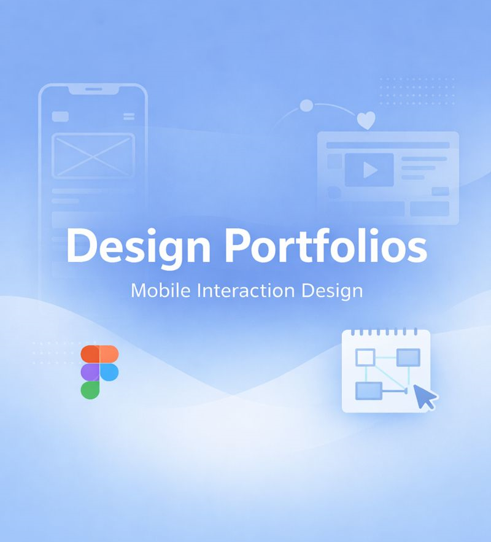

Design Portfolios
2024Vier kompakte Portfolios aus dem Studium — Grundlagen, Analyse, Prototyping und die ehrliche Reflexion danach.

- Rolle
- Konzept, Gestaltung, Text
- Team
- Einzelarbeiten
- Kontext
- Mobile Interaction Design, HdM
- Format
- 4 PDF-Portfolios
Vier Blickwinkel auf denselben Prozess
Diese Portfolios sind im Rahmen der Vorlesungen zu Mobile Interaction Design entstanden. Jedes beleuchtet eine andere Phase: Gestaltungsgrundlagen, die Analyse bestehender Apps, das eigene Prototyping und schließlich die kritische Reflexion des gesamten Vorgehens.
Zum Durchblättern
Grundlagen des Designs
Eine kuratierte Sammlung gestalterischer Grundprinzipien: Layout, Typografie, Farbe und visuelle Hierarchie. Die Beispiele zeigen, wie konsequente Raster, Abstände und visuelle Hinweise klare, nutzerfreundliche Interfaces ergeben.
02App-Dekonstruktion
Eine analytische Zerlegung einer bestehenden App: Struktur, Interaktionsmuster und UX-Entscheidungen. Durch das Sezieren von Interface, Navigationsflüssen und Komponentenhierarchie wird sichtbar, wie durchdachte Entscheidungen die Bedienbarkeit prägen.
03Design-Prototyping
Konzeption und Umsetzung eines interaktiven App-Prototyps — von der Idee bis zum ersten funktionierenden Entwurf. Im Fokus: iteratives Skizzieren, Wireframing und Low-Fidelity-Tests, bevor es ins Detail geht.
04Design-Reflexion
Eine reflektierende Analyse des Design-Prozesses: Entscheidungen, Ergebnisse und Verbesserungspotenzial. Was aus Nutzertests, Iterationen und der Zusammenarbeit im Team hängen bleibt — und wie es künftige Projekte prägt.